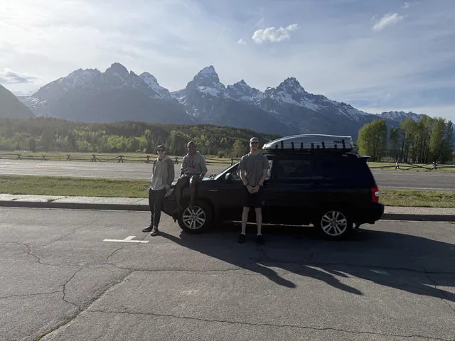
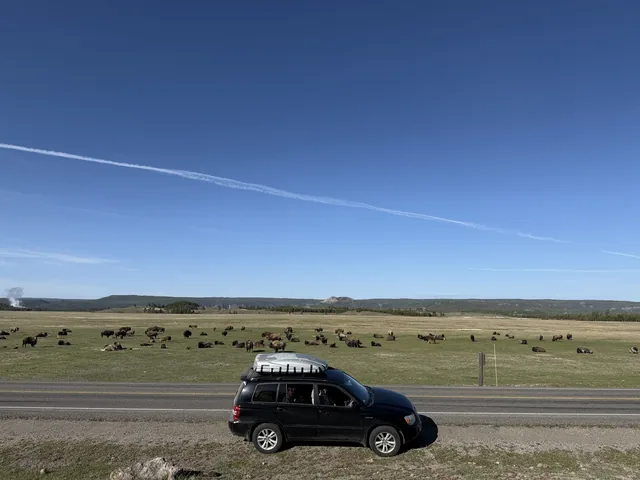
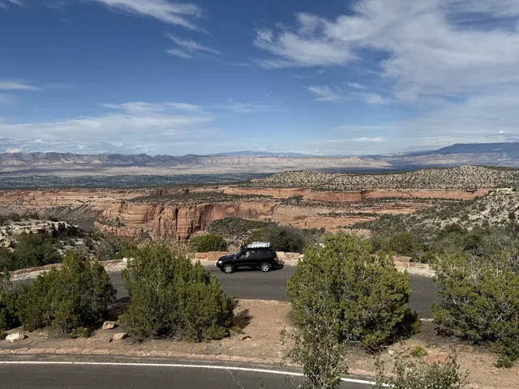
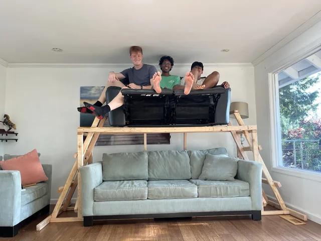
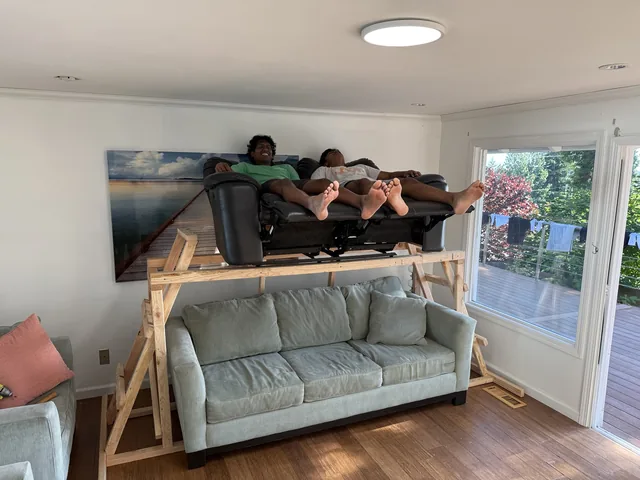
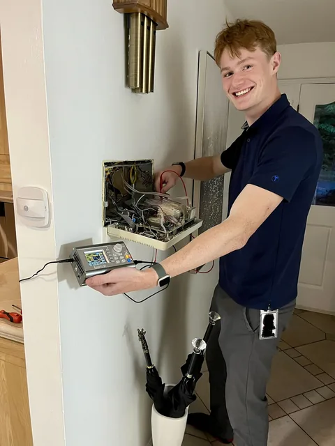
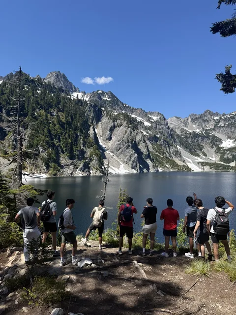

Starlink Aviation
Most of my technical work is not something I can share in detail here. During summer 2026, I worked with the Starlink Aviation electrical integration team in the Seattle area, supporting component qualification and aircraft installation work.
The internship gave me responsibility for hardware beyond my own prototypes and a closer view of how design, testing, and installation fit together. My resume provides a high-level summary of the work.
Driving across the country
Before the internship, I drove across the country to Seattle. The trip turned the move into an opportunity to explore, spend time outdoors, and see places I had not been before.
{kind=link}

{kind=link}

{kind=link}

A house full of roommates and side projects
I lived with seven roommates, and my habit of building things followed me home. I designed a double-decker couch so more of us could fit upstairs to watch TV.
{kind=link}

{kind=link}

Giving the house intercom Bluetooth
I adapted the house intercom to accept Bluetooth audio so we could play music throughout the house.
The couch and intercom were personal projects outside SpaceX, not company work. They capture another part of the summer: living with friends, finding things to improve, and building for the people around me.
{kind=link}

Weekends outdoors
Hiking and time with friends remained a large part of the summer outside work.
{kind=link}

What I took away
I valued the responsibility and the chance to learn from the team. Outside the office, the road trip, hiking, and shared house made the summer just as memorable. Both sides of it reinforced how much I enjoy making things and sharing new experiences with other people.